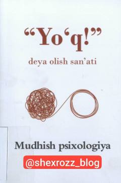

YDKerakli paytda "yo'q" deyishni o'rganib, shaxsiy chegaralaringizni mustahkamlang.
Ushbu kitob insonlarga o'z shaxsiy chegaralarini belgilash va kerakli vaziyatlarda "yo'q" deyish ko'nikmasini o'rgatadi. Doimiy ravishda barchaga rozi bo'lishning salbiy oqibatlari hamda ichki muvozanatni saqlash sirlari muhokama qilinadi. Asar turk tilidan Nurillo Erkin tomonidan tarjima qilingan.